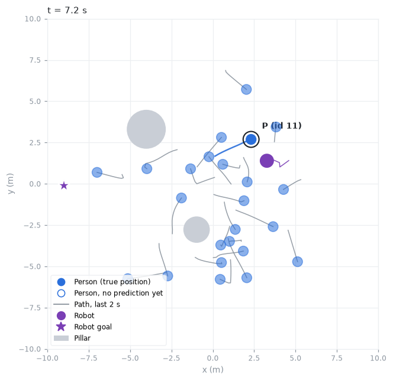

One decision, step by step
The robot is crossing a plaza with 24 people. At t = 5 s the whole crowd turns erratic, a behaviour the robot's bank of past crowds never contained. At t = 7.2 s, after the switch, it has to pick its next move. This page follows that one decision through the pipeline, with the numbers the code produced.
How this moment was chosen
Rule, applied in time order, first match wins: (1) t is at or after the switch (t ≥ 5 s), so the crowd is already erratic; (2) the scene model is active: its latest refit read at least 20 completed rows of this episode (below that the frozen model runs alone), and at least 20 of those rows were made after the switch, so the scene model has seen the erratic crowd; (3) at least 3 of the 22 candidate moves are vetoed for box, each confirmed by recomputing the gap to a predicted box (not the 0.4 s check); (4) a person P has a prediction, moves at ≥ 0.5 m/s, is within 3 m of the robot, vetoes at least one move with their own box, and is still in the scene 1 s and 2 s later. P is the nearest such person.
Result: t = 7.2 s, P = id 11, 1.61 m from the robot, 1.02 m/s. 14 moves vetoed for box. The scene model in use was fitted at t = 7.2 s on 250 recent rows.
The scene

Sensing: noisy positions, filtered track

| quantity | filtered | true (simulator) |
|---|---|---|
| x (m) | 2.284 | 2.311 |
| y (m) | 2.671 | 2.690 |
| vx (m/s) | 0.974 | 1.058 |
| vy (m/s) | 0.313 | 0.413 |
Reconstructed from the noise seed and checked against the planner's query row: match.
The table row TabPFN gets
One row per person and horizon, 39 numbers. Everything is in P's own frame: x = along P's heading, y = across (left is +). The two rows differ only in h_f. Both models below get exactly these rows.
| feature | h = 1 s | h = 2 s | meaning |
|---|---|---|---|
| Own motion | |||
| h_f | 1.000 | 2.000 | horizon asked about (s) |
| speed | 1.023 | 1.023 | filtered speed (m/s) |
| a_lon | −0.823 | −0.823 | acceleration along heading (m/s²) |
| a_lat | −0.594 | −0.594 | acceleration sideways (m/s², + = left) |
| turn_rate | −0.498 | −0.498 | turning rate (rad/s, + = left) |
| radius | 0.300 | 0.300 | body radius (m) |
| Recent path | |||
| hist_x1 | −0.126 | −0.126 | where P was 0.2 s ago, along its heading, from now (m) |
| hist_y1 | 0.057 | 0.057 | where P was 0.2 s ago, across its heading, from now (m) |
| hist_x2 | −0.319 | −0.319 | where P was 0.4 s ago, along its heading, from now (m) |
| hist_y2 | 0.032 | 0.032 | where P was 0.4 s ago, across its heading, from now (m) |
| hist_x3 | −0.528 | −0.528 | where P was 0.6 s ago, along its heading, from now (m) |
| hist_y3 | 0.038 | 0.038 | where P was 0.6 s ago, across its heading, from now (m) |
| hist_x4 | −0.818 | −0.818 | where P was 0.8 s ago, along its heading, from now (m) |
| hist_y4 | 0.041 | 0.041 | where P was 0.8 s ago, across its heading, from now (m) |
| hist_x5 | −1.165 | −1.165 | where P was 1.0 s ago, along its heading, from now (m) |
| hist_y5 | −0.006 | −0.006 | where P was 1.0 s ago, across its heading, from now (m) |
| Neighbours | |||
| n0_x | 1.746 | 1.746 | nearest person: offset along P's heading (m) |
| n0_y | 0.343 | 0.343 | nearest person: offset across (m, + = left) |
| n0_vx | −1.007 | −1.007 | nearest person: velocity relative to P, along (m/s) |
| n0_vy | 0.001 | 0.001 | nearest person: relative velocity, across (m/s) |
| n0_dist | 1.779 | 1.779 | nearest person: distance (m; 99 = nobody) |
| n1_x | −1.675 | −1.675 | 2nd nearest person: offset along P's heading (m) |
| n1_y | 0.730 | 0.730 | 2nd nearest person: offset across (m, + = left) |
| n1_vx | −0.149 | −0.149 | 2nd nearest person: velocity relative to P, along (m/s) |
| n1_vy | 0.688 | 0.688 | 2nd nearest person: relative velocity, across (m/s) |
| n1_dist | 1.827 | 1.827 | 2nd nearest person: distance (m; 99 = nobody) |
| n2_x | −1.998 | −1.998 | 3rd nearest person: offset along P's heading (m) |
| n2_y | −0.913 | −0.913 | 3rd nearest person: offset across (m, + = left) |
| n2_vx | −1.669 | −1.669 | 3rd nearest person: velocity relative to P, along (m/s) |
| n2_vy | 0.424 | 0.424 | 3rd nearest person: relative velocity, across (m/s) |
| n2_dist | 2.197 | 2.197 | 3rd nearest person: distance (m; 99 = nobody) |
| Robot | |||
| robot_x | 0.598 | 0.598 | robot offset along P's heading (m) |
| robot_y | −1.581 | −1.581 | robot offset across (m, + = left) |
| robot_dist | 1.690 | 1.690 | distance to robot centre (m) |
| robot_closing | 0.972 | 0.972 | speed at which robot and P approach (m/s, + = closing) |
| Surroundings | |||
| obst_x | −4.756 | −4.756 | nearest pillar or wall surface, along (m) |
| obst_y | 2.069 | 2.069 | nearest pillar or wall surface, across (m) |
| obst_dist | 5.187 | 5.187 | distance to that surface (m) |
| density_3m | 5.000 | 5.000 | people within 3 m |
The examples TabPFN read: two models
TabPFN does not train: it reads labelled rows and predicts from them. The planner runs two TabPFN models and averages their answers.
Frozen model: 2,000 bank rows, read once before the episode starts. Random rows at their natural move frequency (no forced stops or turns), from 244,757 rows of 62 crossing-crowd episodes (the 58 episodes with any erratic behaviour were removed, so erratic is new to it). These 2,000 rows come from 62 episodes.
Scene model: 250 rows from this run, refitted every 2 s on the most recent completed rows (at most 250; outcome already known, t + h ≤ refit time), labelled from the robot's own filtered observations, not from the simulator. At t = 7.2 s: 130 rows at +1 s, 120 at +2 s, made between t = 3.4 and 6.2 s; 120 of them after the switch. Moves labelled as turns: 16% of the frozen rows, 30% of the scene rows.
| model | from | h (s) | speed | n0_dist | robot_dist | robot_closing | mode | ddx (along) | ddy (across) |
|---|---|---|---|---|---|---|---|---|---|
| frozen (bank) | bank episode 102, t = 29.0 s | 2.00 | 0.52 | 1.07 | 4.71 | −0.96 | turn_right | 0.78 | 0.10 |
| frozen (bank) | bank episode 105, t = 15.4 s | 2.00 | 0.67 | 1.87 | 6.57 | −0.88 | straight | −0.30 | −0.11 |
| frozen (bank) | bank episode 11, t = 21.8 s | 1.00 | 1.77 | 3.40 | 5.48 | −1.43 | unknown | 0.07 | 0.20 |
| frozen (bank) | bank episode 77, t = 21.0 s | 2.00 | 0.12 | 2.42 | 9.68 | −0.37 | turn_left | 0.60 | −0.40 |
| frozen (bank) | bank episode 95, t = 5.8 s | 2.00 | 0.64 | 3.71 | 10.93 | 0.70 | turn_right | 0.44 | −0.11 |
| frozen (bank) | bank episode 73, t = 17.0 s | 2.00 | 1.07 | 2.09 | 6.98 | −0.76 | straight | 0.11 | 0.46 |
| scene (recent) | this run, t = 6.2 s | 1.00 | 1.33 | 1.27 | 4.15 | 1.13 | unknown | −0.34 | 0.20 |
| scene (recent) | this run, t = 6.2 s | 1.00 | 0.93 | 1.57 | 9.03 | 0.18 | unknown | 0.12 | 0.21 |
| scene (recent) | this run, t = 6.2 s | 1.00 | 1.26 | 0.76 | 6.20 | −0.36 | unknown | 0.05 | 0.15 |
| scene (recent) | this run, t = 6.2 s | 1.00 | 0.99 | 0.91 | 3.50 | −0.01 | unknown | 0.23 | −0.02 |
| scene (recent) | this run, t = 6.2 s | 1.00 | 0.51 | 0.72 | 1.90 | 0.81 | unknown | 0.44 | −0.49 |
| scene (recent) | this run, t = 6.2 s | 1.00 | 1.18 | 1.34 | 7.51 | −0.53 | unknown | −1.24 | −0.65 |
12 of the 2,250 rows: the first 6 frozen rows and the 6 most recent scene rows. ddx/ddy is the target: where that person really was after h seconds, minus where constant velocity put them, in their own frame.

TabPFN's answer for P: frozen, scene, average
| horizon | axis | model | q05 | q15 | q50 | q85 | q95 | actual | 15–85% width |
|---|---|---|---|---|---|---|---|---|---|
| +1 s | along (ddx) | frozen model | −0.63 | −0.37 | −0.03 | 0.25 | 0.47 | −0.73 | 0.62 |
| +1 s | along (ddx) | scene model | −0.76 | −0.45 | −0.08 | 0.20 | 0.37 | −0.73 | 0.66 |
| +1 s | along (ddx) | average (final) | −0.69 | −0.41 | −0.06 | 0.23 | 0.42 | −0.73 | 0.64 |
| +1 s | along (ddx) | served (offset +0.02 m) | – | −0.43 | – | 0.24 | – | −0.73 | 0.67 |
| +1 s | across (ddy) | frozen model | −0.32 | −0.20 | −0.01 | 0.17 | 0.30 | 0.13 | 0.37 |
| +1 s | across (ddy) | scene model | 0.02 | 0.26 | 0.63 | 0.93 | 1.11 | 0.13 | 0.67 |
| +1 s | across (ddy) | average (final) | −0.15 | 0.03 | 0.31 | 0.55 | 0.70 | 0.13 | 0.52 |
| +1 s | across (ddy) | served (offset +0.02 m) | – | 0.01 | – | 0.57 | – | 0.13 | 0.56 |
| +2 s | along (ddx) | frozen model | −1.12 | −0.71 | −0.11 | 0.43 | 0.80 | −0.91 | 1.14 |
| +2 s | along (ddx) | scene model | −1.13 | −0.70 | −0.21 | 0.22 | 0.47 | −0.91 | 0.92 |
| +2 s | along (ddx) | average (final) | −1.13 | −0.70 | −0.16 | 0.33 | 0.63 | −0.91 | 1.03 |
| +2 s | along (ddx) | served (offset +0.02 m) | – | −0.72 | – | 0.34 | – | −0.91 | 1.07 |
| +2 s | across (ddy) | frozen model | −0.42 | −0.23 | 0.04 | 0.35 | 0.60 | 0.03 | 0.58 |
| +2 s | across (ddy) | scene model | 0.11 | 0.51 | 0.98 | 1.34 | 1.59 | 0.03 | 0.83 |
| +2 s | across (ddy) | average (final) | −0.15 | 0.14 | 0.51 | 0.84 | 1.09 | 0.03 | 0.71 |
| +2 s | across (ddy) | served (offset +0.02 m) | – | 0.12 | – | 0.86 | – | 0.03 | 0.74 |
Metres, in P's frame, relative to the constant-velocity point. The final answer averages the two models' quantiles per axis, then sorts them so the bounds never cross. q15 and q85 of the average are the box edges, widened on every side by the online offset d = +0.02 m in force at t (the 'served' rows: what the planner checked). "actual" is where P really went (simulator). The quantiles come from refitting both models on the same rows; largest difference from the planner's logged 5–95% box over all people: 0.0e+00 m, and from its served box: 1.1e-16 m.

Everyone's boxes

Occupancy grid

| horizon | Brier | Brier if all zero | AUC | true cells | cells | mean P at true cells | max P |
|---|---|---|---|---|---|---|---|
| +1 s | 0.0037 | 0.0037 | 0.9193 | 24 | 6400 | 0.0409 | 0.1530 |
| +2 s | 0.0037 | 0.0037 | 0.8348 | 24 | 6400 | 0.0170 | 0.0647 |
Only 24 of 6400 cells hold a person, so a grid of zeros already scores Brier 0.0037. Brier alone says little here; the AUC (does a true cell rank above an empty one?) is the informative number.
The planner's choice

| speed (m/s) | direction vs goal (°) | worst gap (m) | progress in 2 s (m) | reason | blocked by | chosen |
|---|---|---|---|---|---|---|
| 0.00 | – | 0.12 | 0.00 | box | 15@+2s | |
| 0.33 | −90.00 | −0.48 | −0.02 | box | 15@+1s, 15@+2s | |
| 0.33 | −60.00 | −0.25 | 0.32 | box | 15@+2s | |
| 0.33 | −30.00 | 0.07 | 0.57 | box | 15@+2s | |
| 0.33 | 0.00 | 0.41 | 0.67 | none | ||
| 0.33 | 30.00 | 0.67 | 0.57 | none | ||
| 0.33 | 60.00 | 0.41 | 0.32 | none | ||
| 0.33 | 90.00 | 0.19 | −0.02 | box | 13@+2s | |
| 0.67 | −90.00 | −0.70 | −0.07 | box | 11@+1s, 11@+2s, 15@+1s, 15@+2s | |
| 0.67 | −60.00 | −0.58 | 0.61 | box | 15@+1s, 15@+2s | |
| 0.67 | −30.00 | 0.09 | 1.13 | box | 15@+2s | |
| 0.67 | 0.00 | 0.72 | 1.33 | none | ||
| 0.67 | 30.00 | 0.68 | 1.13 | none | ||
| 0.67 | 60.00 | 0.03 | 0.61 | box | 13@+2s | |
| 0.67 | 90.00 | −0.41 | −0.07 | box | 13@+2s, 21@+2s | |
| 1.00 | −90.00 | −0.70 | −0.16 | box | 6@+2s, 11@+1s, 11@+2s, 15@+1s, 15@+2s | |
| 1.00 | −60.00 | −0.09 | 0.87 | box | 11@+1s, 15@+1s, 15@+2s | |
| 1.00 | −30.00 | 0.42 | 1.69 | none | ||
| 1.00 | 0.00 | 0.76 | 2.00 | none | yes | |
| 1.00 | 30.00 | 0.58 | 1.69 | none | ||
| 1.00 | 60.00 | −0.35 | 0.87 | box | 2@+2s, 13@+2s | |
| 1.00 | 90.00 | −0.70 | −0.16 | box | 13@+1s, 13@+2s, 21@+2s |
"blocked by" lists person ids (and horizon) whose box gap falls under the margin, recomputed with planner.gap_to_box. Worst gap includes the 0.4 s constant-velocity check. Planner time at this step: features 126 ms, prediction 24193 ms, planning 62 ms.
The whole run

| metric | value |
|---|---|
| reached goal | yes |
| time to goal (s) | 30.00 |
| time near people, gap < 0.5 m (s) | 1.20 |
| min gap (m) | 0.14 |
| seconds stopped | 2.80 |
| collision steps | 0 |
| moving collision steps | 0 |
| path length (m) | 21.87 |
| fallback rate (no safe move) | 0.17 |
| prediction ms per plan | 13976.08 |
Numbers worth a second look
- Veto reasons over all 75 plans of the episode: box 857, none 701, obstacle 62, short check 18, bounds 12.
- Episode-wide, the served 15–85% box (with the online offset) held the true position 45% of the time at +1 s and 35% at +2 s (≈ 49% expected for a 2-axis box of 70% intervals, if the axes were independent). Median error of the TabPFN median 0.44 / 0.95 m, constant velocity 0.47 / 1.07 m; median box side (geometric mean) 0.70 / 1.24 m.
- Rows read at this moment: frozen model 2,000 bank rows (fixed for the whole episode), scene model 250 recent rows, of which 120 at +2 s (a +2 s outcome is known only 2 s later). Online offset (per-batch rule): d = +0.019 m at t, +0.061 m at the end of the episode, mean +0.041 m; raw 5–95% box missed 30% of scored rows (target 20%).
- Stopping was vetoed (box) at this moment (worst gap 0.12 m): blocked by 15@+2s: a box reaches the spot where the robot stands.
- P's +2 s range (average of the two models) along the heading: q05 -1.13 m vs q95 0.63 m around the constant-velocity point; frozen model alone -1.12 to 0.80 m, scene model alone -1.13 to 0.47 m.
- Occupancy at +2 s: Brier 0.00372 against 0.00375 for an all-zero grid (1% better); AUC 0.835. Mean probability in the cells that really hold someone: 0.017.
- Prediction cost: 13976 ms per replan on average, refits included (wall time on a shared CPU, 3 threads, other jobs running; it varies between runs), against a 400 ms replan period. The episode clock is simulated, so this does not change the robot's behaviour.
Tables behind every figure: docs/walkthrough/*.csv and *.json. Rerun with python tools/walkthrough.py.